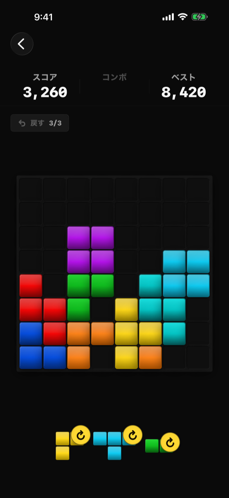

メインのゲームプレイ画面

| 要素 | 説明 |
|---|---|
| ScoreHeaderView | 現在スコア / ハイスコア / コンボ |
| GridView | 8×8グリッド描画（消去アニメ含む）。v1.5.2〜 各マスがタップを受け付ける（タップで置く操作。下記「ピースの置き方」） |
| BlockTrayView | 3スロットのピース。ドラッグで運ぶ／タップで選ぶ（v1.5.2〜）。選択中のピースはアクセント色の枠で囲む |
| プレビュー表示 | ドラッグ中の配置先ハイライト。タップで置く操作では「仮置き」（置く位置を薄く表示）にも使う |
| 回転ボタン | ピースの右上に重ねて表示。タップで90度回転（4方向）。ボタンに触れたまま指を動かすとピースを持ち上げて運べる（v1.5.2〜）。対称ピース（●・□・＋）には出さない。タッチターゲット 48pt（→アクセシビリティ基準参照） |
| アンドゥボタン（戻すボタン） | 1手戻す。無料は最大3回、プレミアムは無制限。タッチターゲット 48pt（→下記アンドゥボタン仕様） |
| 一時メッセージ | アンドゥやタップで置く操作の案内（「もう一度タップすると置きます」「ここには置けません」など）。v1.5.2〜 戻すボタンの右に表示（以前はボタンの下に出していたため、表示のたびに盤面が上下していた）。約1.8秒で消え、VoiceOver でも読み上げる |
| PlayFeedbackOverlay | スコアポップアップ・賞賛テキスト・クロス爆発 |
| BannerAdView | 下部固定。広告を配信できる環境（App Store 配信版）で、広告 SDK の初期化が済んでいるときだけ表示。広告を配信しない環境・プレミアム購入時・撮影モード時は枠ごと非表示 |
ドラッグとタップの2通りで置ける。どちらを使っても結果（得点・消去）は同じ。
| 項目 | 仕様 |
|---|---|
| 持ち上げ | ピースに触れて約10pt動かすと持ち上がる |
| 運んでいる間の見た目 | 盤面のマスと同じ大きさで描く（v1.5.1 までは 1.18 倍に拡大していた） |
| 置く位置の決め方 | 指の下に描かれているピースの見た目の位置で決める。v1.5.1 までは指の位置から計算していたため、ピースの端を掴むと見た目と置かれる位置がずれた |
| マスへの合わせ方 | 最も近いマスに合わせる。上下左右とも盤面の外へ約0.5マスまではみ出していても盤面に吸い付く（v1.5.1 までは上端・左端だけ約1.5マス外まで吸い付いていた） |
| 離したとき | 置ける位置なら置く。置けない位置なら、ピースはトレイへ戻り小さく揺れる |
位置の決め方の詳細は ゲームロジック の「タップで置くときの位置」を参照。
| ユーザー区分 | 回数 | 残数表示 | 広告視聴 |
|---|---|---|---|
| 無料 | 3回 / ゲーム（v1.4 から変更なし） | 「残り/3」形式 | 広告配信中は2回目以降に必要（現状は配信停止中のため不要） |
| プレミアム購入者 | 無制限（★ v1.5.0 特典） | ∞ | 一切要求しない |
ボタンのラベルは広告視聴が必要な場合のみ「戻す (広告)」となるが、広告配信停止中は常に「戻す」と表示される。 支援技術向けには、無制限時は「配置を1手戻す（回数無制限）」、通常時は「配置を1手戻す（残りN回）」と読み上げる。
| ボタン | タッチターゲット | 採用基準 |
|---|---|---|
| 回転ボタン | 48 × 48 pt | Material Design 3（Apple HIG 44pt より厳しい側） |
| アンドゥボタン（戻す） | 48 × 48 pt | 同上 |
| トレイのピース | 見た目の大きさ＋周囲 7pt | 1マス等の小さいピースでも掴みやすくする（隣のスロットとは重ならない幅） |
OS の「文字サイズ」設定（アクセシビリティ設定含む）がアプリ内の文字サイズ設定（fontSizeLevel）より大きい場合は、OS 側の設定を優先して適用する。これにより、アプリ内設定を「標準」のまま使っているユーザーでも、OS でアクセシビリティ目的の大文字設定をしていれば正しく反映される。
| 状態 | 説明 |
|---|---|
.playing | 通常プレイ中 |
.gameOver | 配置不可・GameOverView オーバーレイ |
.rescued | 「もう1手」で救済中（広告配信停止中は広告を挟まず遷移） |
| 操作 | 遷移先 |
|---|---|
| ゲームオーバー判定 | GameOverView（オーバーレイ）。初回のゲーム終了後には、トラッキング許可（ATT）のダイアログが出ることがある（v1.5.2〜。広告制御参照） |
| 戻る | HomeView |
| バージョン | 日付 | 変更内容 |
|---|---|---|
| 1.0 | 2026-05-09 | 初版作成 |
| 1.1 | 2026-06-10 | 画面イメージ（fastlane snapshot 自動撮影）を追加 |
| 1.2 | 2026-07-14 | 回転・アンドゥボタンのタッチターゲットを 48pt（MD3 基準）に拡大。OS Dynamic Type 優先ロジックを反映。アクセシビリティ基準セクション新設 |
| 1.3 | 2026-07-30 | v1.5.0 対応: バナー広告を枠ごと非表示（広告配信の恒久停止）に更新。アンドゥボタン仕様セクションを新設し、プレミアムのアンドゥ無制限（残数表示 ∞・広告視聴を要求しない）を追加。.rescued 状態の説明を「もう1手」ベースに修正 |
| 1.4 | 2026-09-29 | v1.5.2 対応: 「ピースの置き方」を新設。タップで置く操作（ピースを選ぶ → マスで仮置き → 仮置きの上をもう一度タップで置く）を追加。ドラッグは盤面と同じ大きさで描き、置く位置をピースの見た目の位置で決めるよう変更。v1.5.1 までの「置く位置が約1.6マス上にずれる」不具合と修正内容を記載。回転ボタンから始めたドラッグでピースを運べるように。小型画面のレイアウト（高さ・バナーを考慮したマスの大きさ）、一時メッセージの位置、VoiceOver の読み上げを追記。バナーの説明を「v1.5.0 の恒久停止」前提から表示条件ベースに修正。ゲーム開始時の通知許可の要求をやめたこと（設定画面へ移動）を関連に記載 |